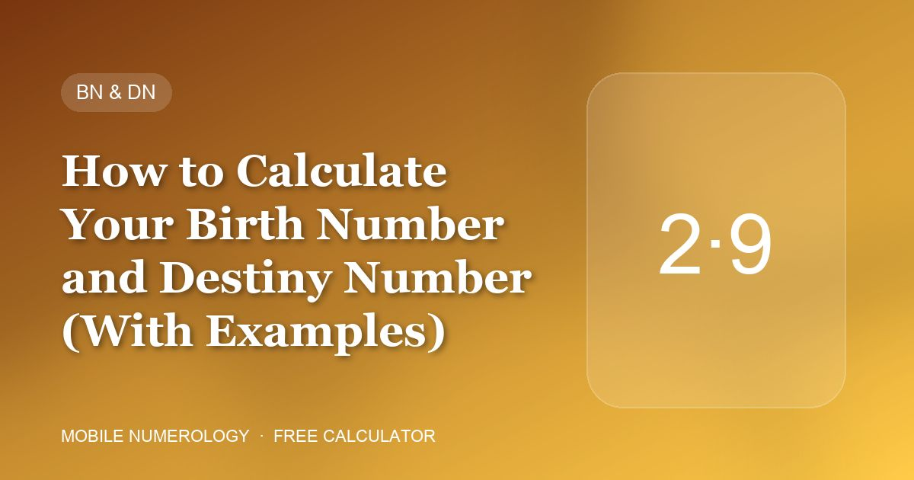

How to Calculate Your Birth Number and Destiny Number (With Examples)

Before you can judge a mobile number, PIN or password, you need two personal numbers: the Birth Number (BN, also called Mulank, Driver or Psychic number) and the Destiny Number (DN, also called Bhagyank, Conductor or Life Path number). Everything else — friendly numbers, wallpaper, cover, affirmation — is keyed to these two.
Birth Number: the day you were born
Take only the day of your date of birth and reduce it to a single digit by adding the digits together.
- Born on the 7th → Birth number 7
- Born on the 16th → 1 + 6 = 7
- Born on the 29th → 2 + 9 = 11 → 1 + 1 = 2
The Birth number describes your natural temperament — how you think, react and what you are drawn to. It is the number used to match cover materials and most of the "best for" recommendations.
Destiny Number: the whole date
Add every digit of the full date (day, month and year) and reduce to a single digit.
Example: 29 / 11 / 1994 → 2 + 9 + 1 + 1 + 1 + 9 + 9 + 4 = 36 → 3 + 6 = 9
The Destiny number describes the direction your life tends to take and the opportunities that come to you. A good mobile number total should be friendly to both the Birth and Destiny numbers — a number that satisfies both is called a balancer.
What each number means
| Number | Planet | Keywords |
|---|---|---|
| 1 | Sun | Leadership, authority, originality |
| 2 | Moon | Emotion, intuition, partnership |
| 3 | Jupiter | Wisdom, knowledge, expansion |
| 4 | Rahu | Discipline, unconventional, sudden change |
| 5 | Mercury | Communication, business, freedom |
| 6 | Venus | Love, luxury, family, beauty |
| 7 | Ketu | Spirituality, research, detachment |
| 8 | Saturn | Karma, hard work, justice |
| 9 | Mars | Energy, courage, action |
Common mistakes
- Using the month in the Birth number. Only the day counts.
- Stopping at a two-digit number. 11, 22 and 29 are all reduced further in this system (11 → 2, 22 → 4, 29 → 2).
- Mixing up which number to use. Cover material and "best for" lists use the Birth number; wallpaper and affirmations are given for both numbers.
A worked example
Someone born on 29 November 1994 has Birth number 2 (Moon) and Destiny number 9 (Mars). Their friendly numbers are 1, 3 and 5 for the Birth number and 1, 2, 3, 5 and 6 for the Destiny number, so their balancer numbers are 1, 3 and 5. A mobile number or PIN that totals 1, 3 or 5 suits them; a total of 4, 8 or 9 (enemies) does not.
Check your own number in 30 seconds
Our free calculator scans all 10 positions of your mobile number, finds your Birth & Destiny numbers and suggests a lucky PIN, password, wallpaper and cover — nothing you type leaves your browser.
Frequently asked questions
Are Birth number and Life Path number the same thing?
No. The Birth (Psychic) number uses only the day of birth; the Life Path or Destiny number uses the full date. They can be the same digit by coincidence.
What if my Birth and Destiny numbers are the same?
Then one set of energy applies to you and the friendly-number list is simpler. The analyser shows a single wallpaper and affirmation card in that case.
Do master numbers 11 and 22 stay unreduced?
In the Chaldean mobile-numerology system used here they are reduced to 2 and 4. Some Western systems keep them as master numbers, but that is a different tradition.